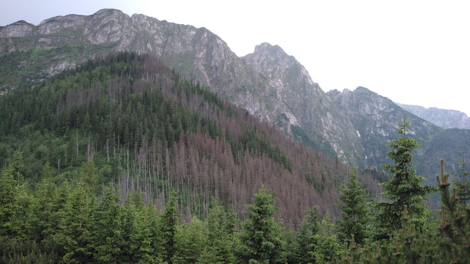

Kilka ciekawych zdjęć, które zrobiłem na przestrzeni lat
Dziewczyny na tle zalewu
Zachód słońca w Kazimierzu Dolnym
Dziewczyna na tle zachodzącego słońca
Zimowy poranek
Zimowy krajobraz
Kolacja wieczór
Opel vectra, pierwszy samochód, krajobraz na wsi
Kwiat jabłoni
Grzybek
Krople deszu

Sarnia Skała - widok
Zima na wsi
Rżysko
Maluch (fiat 126p)
Lublin - Stare Miasto
Lublin - Stare Miasto - wystrój
Plac litewski w Lublinie
Pomnik Józefa Piłsudskiego
Metin2
Dolina orków, Mt2